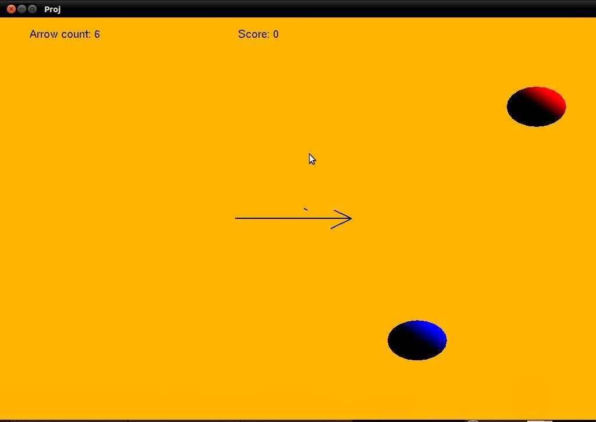

- Online Electricity Bill Payment

- This project manages units, bills, customer reading and consumption. The main
objective to develop this project is to overcome the manual errors and make as
computerized system.
- Bullz Eye

- It is newly designed computer graphics mini project developed using Open gl. This project is game
having moving spheres and arrow to hit the continuously moving balls.
- Detection of Botnet attack using Machine learning and Deep learning

- The main objective of this project is to detect the attack in the botnet using different
algorithm like decesion tree,XG Boost and many more developed using machine learning and deep learning.
and also to achieve higher accuracy and performance in detecting the attack